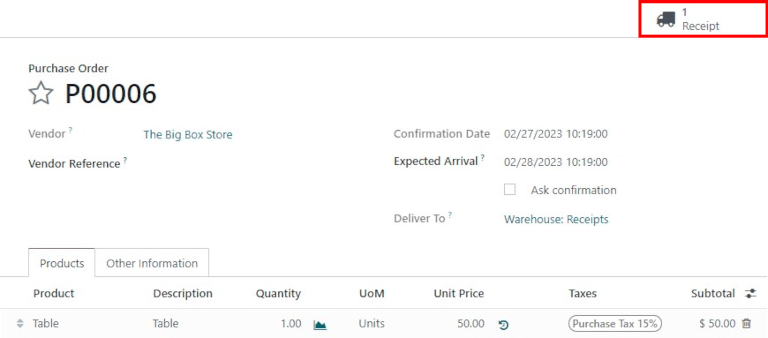
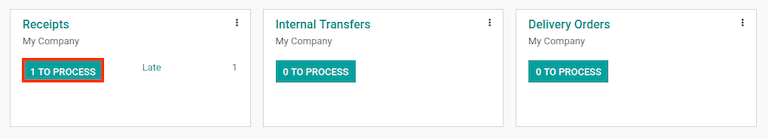
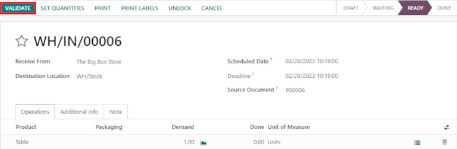
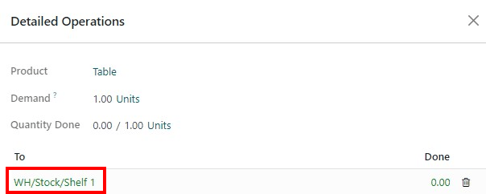
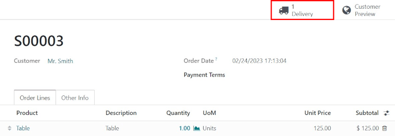

Process receipts and deliveries in one step¶
By default, incoming shipments are configured to be received directly into stock, and outgoing shipments are configured to be delivered directly from stock to the customer; the default setting for warehouses in Odoo is one step receipts and deliveries.
Note
Incoming and outgoing shipments do not need to be configured with the same steps. For example, products can be received in one step, but shipped in three steps.
In the following example, one step will be used for both receipts and deliveries.
Configure the warehouse¶
If another receiving or shipping configuration is set on the warehouse, they can easily be set back to the one step setting.
Begin by navigating to , and click on the desired warehouse to edit. Next, on the Warehouse Configuration tab, under the Shipments section, select Receive goods directly (1 step) for Incoming Shipments and/or Deliver goods directly (1 step) for Outgoing Shipments.

Receive goods directly (1 step)¶
Create a purchase order¶
On the main application dashboard, start by making a new quote by clicking New. Then, select (or create) a Vendor from the drop-down field, add a storable Product to the order lines, and click Confirm Order to finalize the quote as a new purchase order.
A Receipt smart button will appear in the top-right corner of the PO form — click it to reveal the associated receipt for the purchase order.
Tip
Purchase order receipts can also be found in the application. In the Overview dashboard, click the # to Process smart button in the Receipts kanban card.
Process the receipt¶
When viewing the receipt (associated with the purchase order above), click Validate to then complete the receipt.
Note
If Storage Locations are activated, clicking the ≣ (bullet list) details icon next to the 🗑️ (trash) delete icon enables the Detailed Operations screen to pop-up. This allows the location(s) to be specified for the received product(s).
Once the receipt is validated, the product leaves the Supplier Location and enters the WH/Stock Location. Once it arrives here, it will be available for manufacturing, sales, etc. Then, the status of the document will change to Done, thus completing the reception process in one step.
Deliver goods directly (1 step)¶
Create a sales order¶
Start my navigating to the main app dashboard, and make a new quote by clicking New. Then select (or create) a Customer from the drop-down field, add a storable Product that is in stock to the order lines, and click Confirm to finalize the quotation as a sales order.
A Receipt smart button will appear in the top-right corner of the PO form — click it to reveal the associated receipt for the purchase order.
A Delivery smart button will appear in the top-right corner of the SO form — click it to reveal the associated delivery order for the sales order.
Tip
Delivery orders can also be found in the application. In the Overview dashboard, click the # to Process smart button in the Delivery Orders kanban card.

Process the delivery¶
When viewing the delivery order (associated with the sales order above), click Validate to then complete the delivery.

Once the picking order is validated, the product leaves the WH/Stock location and moves to the Partners/Customers location. Then, the status of the document will change to Done, thus completing delivery in one step.